地政学
マドリードは半島中央の高原に置かれた首都で、王宮、議会、官庁、裁判所、大使館が近接します。港湾都市ではありませんが、高速鉄道と空港を通じ国内を束ね、欧州連合とラテンアメリカを結ぶ外交の場にもなります。

🇪🇸 スペイン / ヨーロッパ / World City Atlas
国家中枢、美術館、金融、移民街、住宅緊張、乾いた夏、深夜の食卓、サッカーの儀礼が同じ台地上で重なるスペインの首都です。
都市の骨格
マドリードは海港を持たない内陸首都でありながら、王宮、議会、官庁、金融、鉄道、空港、美術館が集中し、スペイン全土と欧州、ラテンアメリカを結ぶ意思決定の結節点になっています。
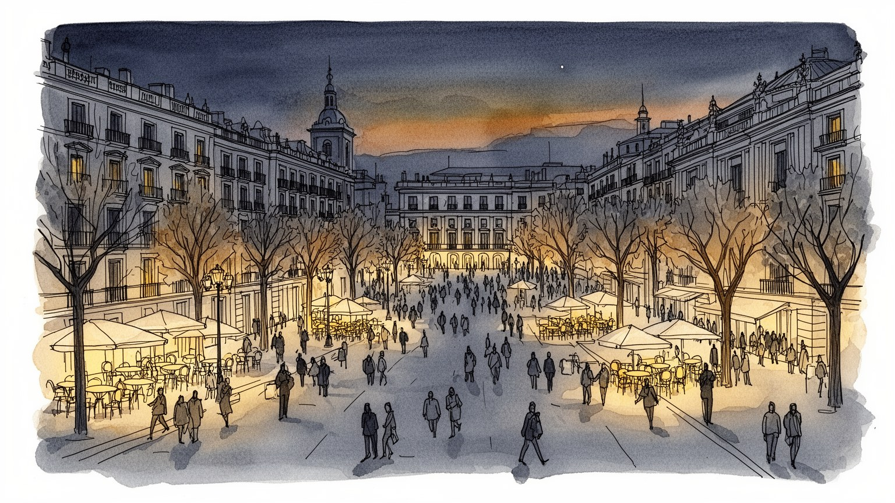
マドリードは半島中央の高原に置かれた首都で、王宮、議会、官庁、裁判所、大使館が近接します。港湾都市ではありませんが、高速鉄道と空港を通じ国内を束ね、欧州連合とラテンアメリカを結ぶ外交の場にもなります。
行政、金融、保険、通信、観光、文化産業、大学、医療が雇用を生み、清掃、警備、介護、飲食、配送、ホテル労働も都市を支えます。高学歴専門職と移民サービス労働が近く、家賃と通勤が日々の生活条件を左右します。
カトリックの祭礼、王室儀礼、美術館、劇場、闘牛の記憶、サッカー、移民の教会やモスクが同じ街に並びます。宗教は大聖堂だけでなく、地区の聖人祭、家族の儀礼、食卓の暦として都市の日常を静かに区切っています。
美術館、王宮、マヨール広場、レティーロ公園、バル巡りは観光客を集めるが、住民には猛暑、家賃上昇、通勤、観光化、夜の騒音が続きます。徒歩と地下鉄で回れる楽しさと、住み続ける難しさが隣り合う都市です。
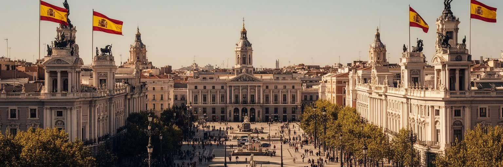
マドリードの首都性は、王宮や議会を観光名所として見るだけでは理解できません。スペインの国政、王室儀礼、最高裁、中央省庁、政党、全国紙、テレビ局、大使館、企業本社が比較的近い範囲に集まり、国家の判断が都心の交通規制、抗議行動、警備、式典、報道の動きとして現れます。内陸の高原に置かれた首都であるため、港を通じて世界へ開くバルセロナやバレンシアとは違い、マドリードは鉄道、空港、行政、金融で国土を束ねます。カタルーニャやバスクをめぐる地域政治、王室への評価、移民政策、住宅政策、欧州連合との関係は、広場や官庁街の緊張として街に戻ってきます。首都は権力の象徴であると同時に、全国の不満が集まる舞台でもあります。地方から集まる公務員、学生、陳情団体、労働組合、外国外交官は、同じ地下鉄とカフェを使いながら異なる目的で都心へ入ります。国家の制度は巨大な建物だけでなく、窓口、裁判、記者会見、デモ申請、警備柵、祝日の行列に分解されて日常化します。だからマドリードを歩くことは、スペインが自分をどう統治し、どこで対立を受け止めるのかを見ることでもあります。首都の集中は危機対応を速くする一方、地方からは過剰な中央集権にも見えます。都市の威厳と反発は同時に育ち、マドリードの政治的な重さはその二面性から生まれます。街路の平穏も政治の一部です。
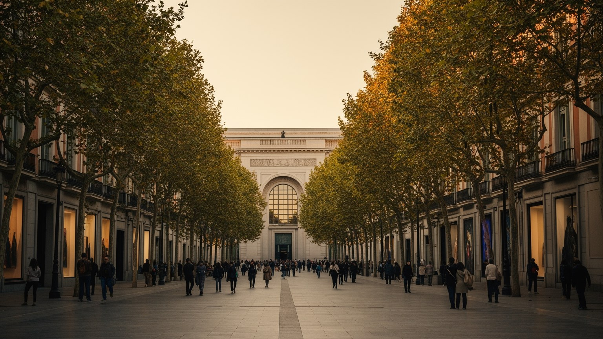
マドリードの文化的な厚みは、プラド、ソフィア王妃芸術センター、ティッセン・ボルネミッサという美術館だけでなく、その周辺の書店、劇場、映画館、大学、カフェ、出版社、公共広場に広がっています。王室コレクションと国家の美術制度は、スペイン帝国、宮廷、宗教画、内戦、前衛芸術を一つの都市に集め、観光客にも住民にも歴史を読み直す入口を与えます。ですが文化は展示室の中だけではありません。ラバピエスの多文化劇場、チュエカの表現、マラサーニャのライブ音楽、フラメンコ小劇場、日曜ののみの市も、都市を更新する小さな舞台です。文化施設の成功は家賃上昇や観光化を招くこともあり、創造性を保つには作り手が住み、練習し、失敗できる場所が必要になります。美術館の行列は都市の国際的な名声を示すが、文化の持続は警備員、学芸員、翻訳者、清掃員、舞台技術者、独立書店、学生の働きにも依存します。作品を見る時間と、作品を支える労働の時間を重ねると、マドリードの文化は過去の栄光ではなく、現在の都市経済と公共投資の問題として見えてきます。無料開放日、学校見学、地域劇場、図書館があることで、文化は富裕層や旅行者だけのものになりません。都市の記憶を共有する制度が、首都の公共性を支えています。小さな会場が残るほど、新しい表現も街に根づき続けます。
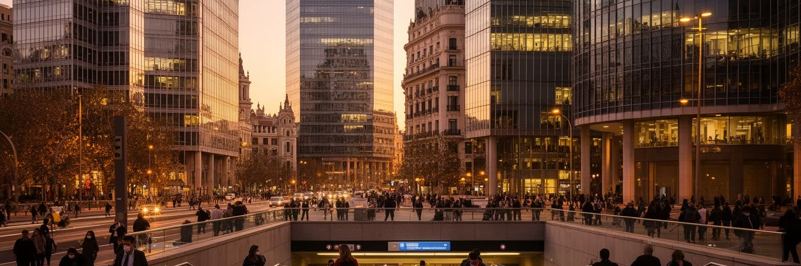
マドリード経済は、政府機能と企業サービスが重なって成長してきました。カステリャーナ通り周辺には銀行、保険、法律、コンサルティング、通信、エネルギー、建設、メディアの本社機能が集まり、北部の高層業務地区はスペイン経済の意思決定を可視化します。観光都市としての印象が強い一方で、マドリードは国内市場を管理し、ラテンアメリカとの投資や企業買収を扱う金融、法務、会計の都市でもあります。高賃金の専門職はグランビアやサラマンカの買い物を支えますが、清掃、警備、宅配、受付、飲食、ホテル、介護の仕事がなければ業務街は動きません。オフィス回帰と在宅勤務、スタートアップ支援、空室、通勤混雑は、業務地区と住宅地の関係を変えています。経済力を見るには、ビルの高さだけでなく、そこで働く人の住まいと時間を読む必要があります。行政契約、公共事業、大学研究、展示会、国際会議は企業サービスに仕事を流し、地方都市の企業も首都の専門家や官庁との距離を意識します。成長の恩恵は都心の飲食や不動産へ波及するが、生活費が上がれば若い労働者や移民の負担も増えます。首都経済の強さは、専門職だけでなく広いサービス労働を維持できるかで試されます。景気が良い時ほど人材は集まりますが、賃金の低い仕事ほど市外へ追いやられやすいです。経済の中心であることは、働く人の生活を都市圏全体で支える責任を伴います。
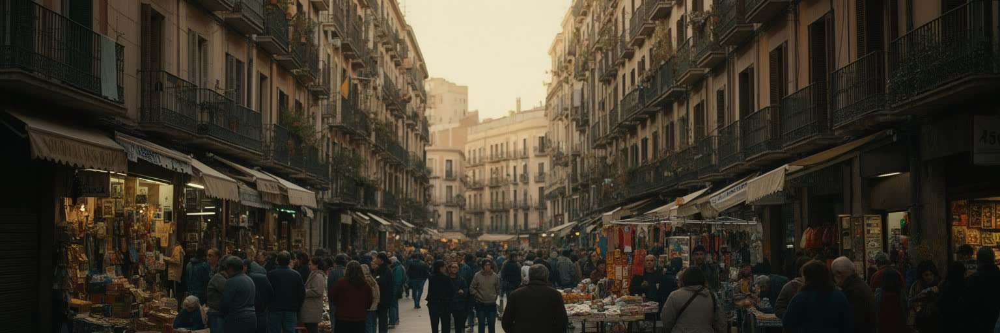
マドリードはスペイン各地から人を集めるだけでなく、ラテンアメリカ、北アフリカ、東欧、アジアからの移民によって日常が作り替えられてきました。ラバピエス、ウセラ、テトゥアン、カラバンチェルでは、食料品店、送金窓口、礼拝所、美容室、語学支援、学校、露店が密に結び、国際都市の顔が観光地区とは違う形で現れます。移民は介護、清掃、建設、物流、飲食、ホテル、家庭内労働で都市を支えますが、在留資格、差別、低賃金、過密住宅に直面することも多いです。スペイン語を共有できるラテンアメリカ出身者でも、制度や労働条件の壁は軽くありません。多文化的な食や音楽が都市の魅力として消費される一方、その担い手が安心して住めるかどうかが都市の公平さを測る基準になります。学校での言語支援、医療窓口、宗教的な食の選択、送金や家族呼び寄せの手続きは、移民街の日常を形づくる実務です。市場の香辛料、果物の匂い、店先の音楽を楽しむとき、その背後には長時間労働、家族の分離、資格更新の不安があります。地区を読むことは、首都の国際性を生活の単位で確かめることでもあります。行政窓口や学校が多言語の支援を用意できるか、警察や医療が信頼されるかによって、同じ都市への参加度は大きく変わります。多様性は標語ではなく、毎日の手続きと近隣関係で試されます。近所の商店が相談先になる場面も多いです。
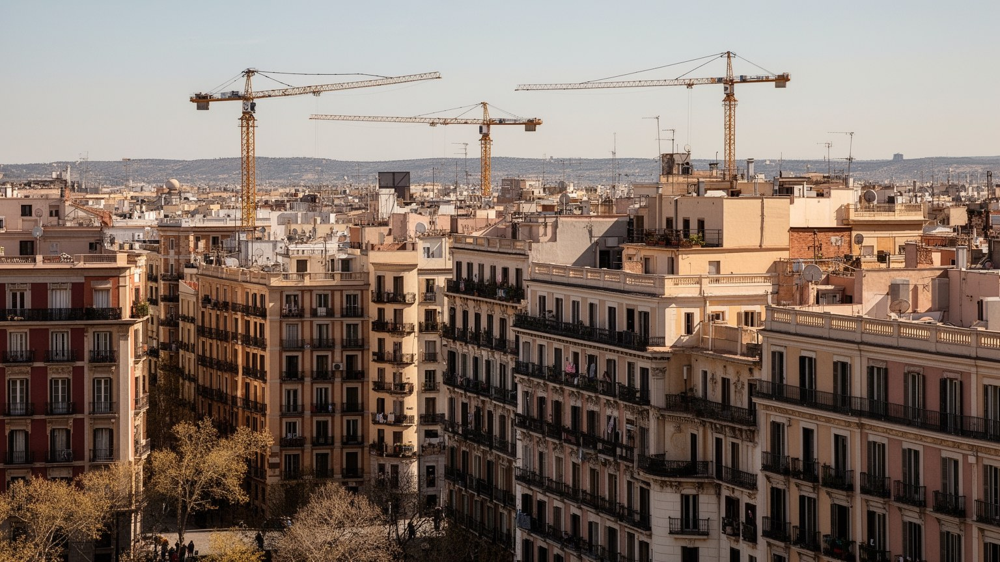
マドリードの暮らしで最も鋭い課題の一つが住宅です。中心部の改修、短期賃貸、投資用物件、大学生と専門職の流入は、古い地区の家賃を押し上げ、長く住んだ住民や小商店を外へ追い出します。美しいバルコニー、狭い路地、飲食店のにぎわいは観光資源になりますが、住民にとっては騒音、混雑、ごみ、更新時の家賃上昇としても経験されます。郊外へ移れば広さを得られる場合もありますが、通勤時間、交通費、保育、学校、医療へのアクセスが生活を縛ります。若者は親元を出にくく、移民世帯は過密な部屋を選ばざるを得ないことがあります。住宅問題は個人の収入だけではなく、土地利用、公共住宅、賃貸規制、観光政策、交通整備が重なった都市政治の結果です。中心部で働く人が中心部に住めないほど、都市の便利さは長い移動と疲労に置き換わります。古い市場やバルが残っても、子どもの遊び場や高齢者のベンチが減れば地区の記憶は変わります。住宅を観光商品や投資対象としてだけ扱えば、街は美しく保たれても生活の基盤を失います。誰が家賃を払い続けられるかが、マドリードの公共性を測る重要な指標になります。空き家の活用、公共住宅の供給、短期賃貸の管理、地下鉄沿線の密度調整は、観光と生活を両立させるための具体策になります。住まいを守れなければ、都市の文化も労働も中心から薄れていきます。家は眠る場所であると同時に、都市に参加する権利の足場でもあります。
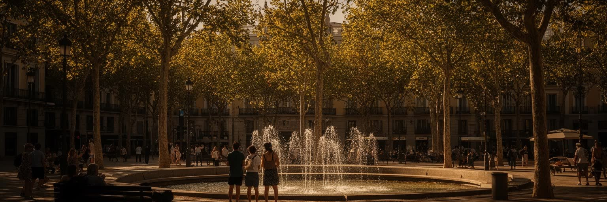
マドリードは標高のある内陸都市で、冬は冷え、夏は乾いた暑さが厳しいです。午後の強い日差しは石畳、広場、バス停、学校、屋外労働の条件を変え、冷房を使える家と使えない家の差を健康格差へ広げます。レティーロ公園、マンサナレス川沿い、街路樹、噴水、日陰のある歩道は、景観以上に気候適応のインフラです。伝統的な昼休みや夜遅い外出のリズムは暑さへの対応でもあったが、観光、オフィス勤務、学校時間、配送労働は簡単に変えられません。気候変動で熱波が長くなるほど、高齢者、子ども、移民労働者、ホームレスの人びとがより強く影響を受けます。マドリードの快適さは、美しい空の青さだけでなく、誰が涼める場所に届くかで決まります。道路の舗装、建物の断熱、公共施設の開放、学校の校庭、バス停の屋根、低所得世帯へのエネルギー支援は、暑さを社会問題として扱うための実務です。観光客には乾いた空気が魅力に見えても、配達員や清掃員には体力を削る職場環境になります。気候を読むことは、都市の景観と福祉を同時に読むことでもあります。夜になっても石に熱が残る地区では、樹木の少なさや住宅の断熱不足がそのまま健康リスクになります。涼しさを公共サービスとして設計できるかが、これからの首都の暮らしを左右します。日陰の質は、広場の使いやすさや子どもの遊びにも直結します。暑さへの備えは都市デザインそのものです。
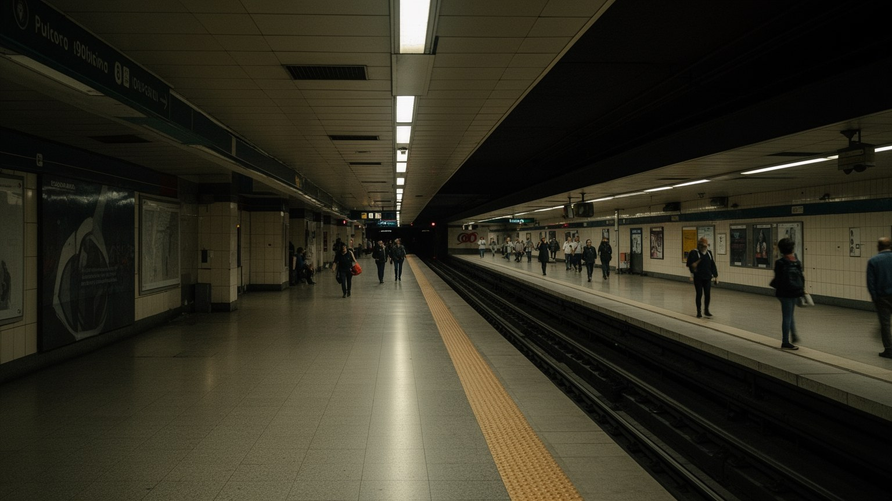
マドリードの都市圏は、地下鉄、近郊鉄道、バス、高速鉄道、環状道路、空港によって広く結ばれています。中心部は徒歩で回りやすく、地下鉄は観光客にも住民にも使いやすいが、通勤圏は市境を越えて郊外自治体へ伸び、職場と住宅の距離は長くなります。アトーチャ駅とチャマルティン駅はスペイン各地への高速鉄道を受け止め、空港は欧州とラテンアメリカをつなぐ玄関になります。交通網は首都の強さですが、混雑、運賃、深夜の移動、郊外のバス本数、障害者や高齢者の使いやすさには差が残ります。自動車依存を減らし、低排出ゾーンや自転車、歩行空間を広げる政策は、商店や通勤者の利害とぶつかります。移動の便利さは都市の民主性であり、誰が安く安全に移動できるかを示します。駅は買い物、待ち合わせ、通勤、観光、抗議行動の入口にもなり、ホームの放送、改札音、広場の話し声を都市のリズムにします。郊外の住宅価格が上がるほど、交通の遅れは家族の夕食、保育、介護、睡眠を直撃します。マドリードの交通を読むには、路線図の密度だけでなく、終電後の帰宅、夏のホームの暑さ、乗り換えの段差まで見る必要があります。空港と高速鉄道が国内外の距離を縮めるほど、駅前の地価や観光客の流れも変わります。交通政策は環境政策であり、住宅政策でもあります。移動時間を短くすることは、余暇や介護の時間を取り戻すことでもあります。
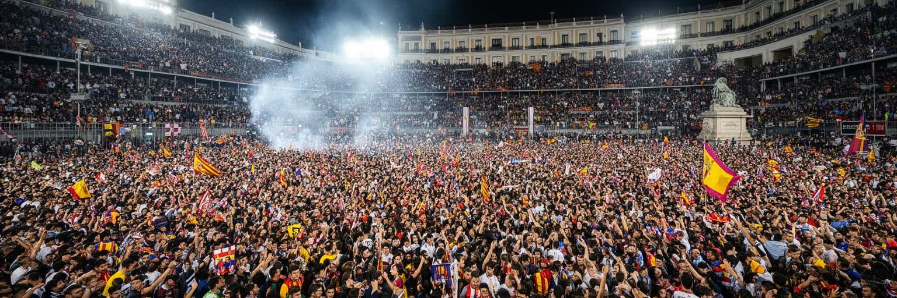
マドリードのサッカーは、娯楽であると同時に都市の儀礼です。レアル・マドリードとアトレティコ・マドリードは、世界的なブランド、地域の誇り、階層の記憶、移民の応援文化、観光消費を巻き込み、試合日は地下鉄、バル、広場、家庭の会話まで変えます。ベルナベウとメトロポリターノは単なる観戦施設ではなく、都市の名声、スポンサー、放映権、警備、清掃、飲食、露店、近隣交通を動かす巨大な経済装置です。勝利の祝賀は広場を占め、敗北は新聞とラジオの議論を生みます。サッカーは男性的な熱狂として語られがちですが、女性サポーター、子ども、移民、観光客、地域の小クラブも都市の感情を作ります。競技の華やかさの背後には、警備員、清掃員、地下鉄職員、バルの店員がいます。国際スターを見に来る旅行者と、何世代も同じ席を守る地元の家族は、同じ試合を違う記憶として持ち帰ります。クラブの成功は都市ブランドを押し上げるが、周辺の家賃、警備費、混雑、商業化も変えます。サッカーを見ることは、マドリードが誇り、階層、消費、地域感情をどう共有するかを見ることでもあります。試合のない日にも、ユニフォーム、新聞、ラジオ、路地や校庭のボール遊びが街に残り、クラブは日常会話の共通語になります。都市の感情は九十分で終わらず、翌週の仕事場まで続きます。勝敗は家族の会話や職場の冗談にも入り込み、都市の連帯と分断を同時に見せます。
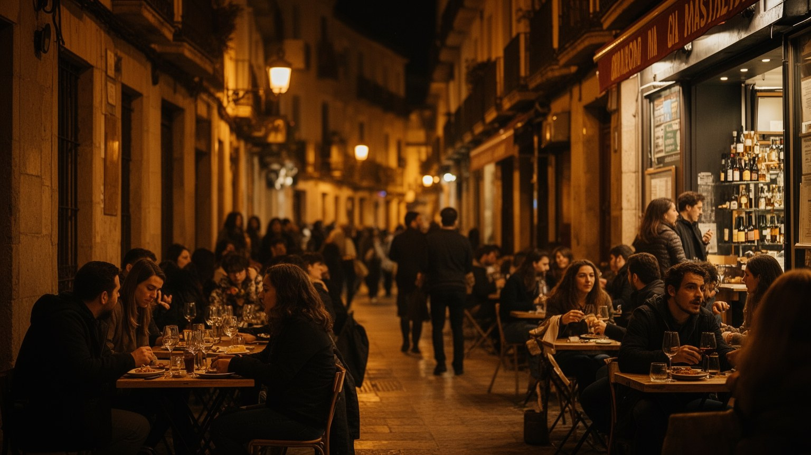
マドリードの夜は、観光の演出ではなく生活の時間です。仕事後にバルへ寄り、タパスを分け、広場で友人を待ち、遅い夕食をとる習慣は、乾いた気候、家族関係、長い都市通勤、食の市場と結びついています。サン・ミゲル市場やサン・アントン市場の食、住宅地の小さなバル、移民の食堂、老舗の菓子店、フラメンコやライブハウス、朝まで続くクラブもあります。夜のにぎわいは雇用を生むが、騒音、飲酒、清掃、治安、住民の睡眠をめぐる対立も生みます。飲食産業では長時間労働や不安定な雇用が多く、華やかな夜景は調理、配膳、皿洗い、警備、地下鉄やタクシーの労働に支えられます。マドリードの食文化を読むには、名物料理だけでなく、誰が夜の都市を働いて保つのかを見る必要があります。揚げ物とチュロスの匂い、石畳に響く会話は家族、友人、同僚、観光客を混ぜますが、価格上昇は地元客を遠ざけることもあります。テラス席を増やす政策は外食を楽しくする一方、歩道の使い方や近隣の静けさをめぐる交渉を生みます。夜が長い都市ほど、楽しむ人と働く人の時間差に敏感でなければなりません。市場から厨房へ届く食材、深夜のごみ収集、翌朝の清掃まで含めると、食の楽しさは都市運営の細かな連鎖で支えられています。夜の自由は、見えにくい労働と近隣の忍耐によって成り立ちます。食べ歩きの魅力を守るには、住民の休息と働く人の権利も同じ重さで扱う必要があります。
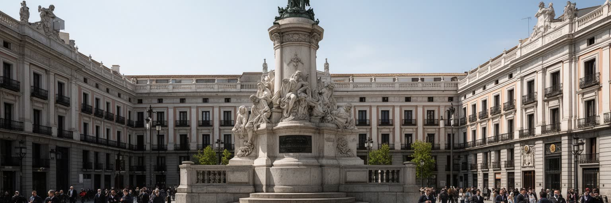
マドリードには、スペイン内戦、フランコ体制、民主化、テロ、抗議運動の記憶が重なっています。内戦期の包囲、地下壕、記念碑、墓地、通りの名前、博物館展示は、過去の出来事を静かに現在へ引き戻します。記憶をどう語るかは政治的であり、犠牲者の顕彰、独裁期の象徴の扱い、王制への評価、地域自治の議論、移民と国家アイデンティティの問題に結びつきます。プエルタ・デル・ソルや広場での抗議は、住民が政治を街路へ戻す方法でもありました。カトリックの行列や地区の守護聖人祭も、石造りの広場に古い時間を呼び戻します。マドリードの政治記憶は、過去を一つの物語にまとめるのではなく、異なる痛みと誇りが同居する都市として読む必要があります。家族の語り、学校教育、記念日の式典、通りの改名、メディアの論争は、記憶を日常の中で更新します。忘却を求める声と、発掘や謝罪を求める声が同じ街にあり、民主主義の成熟はその緊張をどう扱うかで問われます。マドリードの広場は、観光写真の背景である前に、社会が過去と交渉する公共の部屋です。記憶をめぐる対立は、ときに選挙や裁判、博物館の展示方法にも及びます。過去を扱う作法が、現在の市民が互いを信頼できるかどうかを左右します。沈黙もまた政治的な選択であり、語る場を持つことが都市の回復力になります。忘れ方にも責任があります。
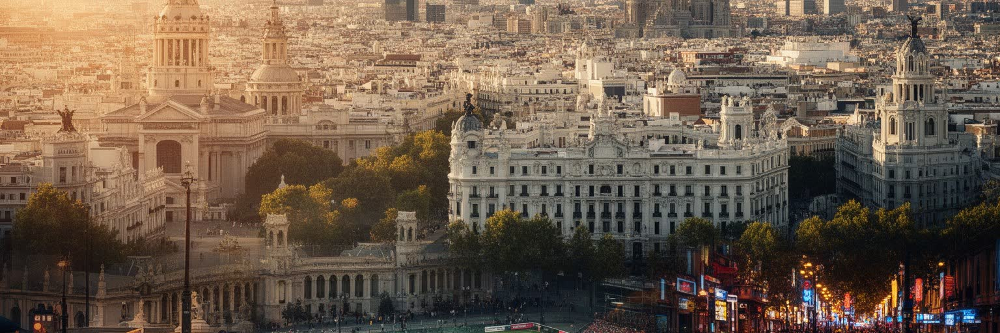
マドリードを読むことは、華やかな王宮、美術館、サッカー、バルのイメージを、住宅、移民、暑さ、政治記憶、労働の現実と重ねることです。首都として国を束ねる力は、地域政治や社会運動の対立も引き寄せます。文化都市としての成功は、観光収入を生む一方で、家賃と短期賃貸を通じて暮らしを圧迫します。金融と行政の安定は専門職を集めるが、その毎日は清掃、介護、配達、飲食、警備の労働に支えられます。乾いた青空は魅力であると同時に、熱波への備えを急がせます。マドリードの強さは、内陸にありながら欧州、地中海、ラテンアメリカを結ぶ開かれた首都である点にあります。その都市性は、広場で休む人、地下鉄で通う人、夜に働く人、記憶を語る人を同時に見ると立体になります。旅行者には歩きやすく明るい都市に見えても、住民には家賃、通勤、介護、学校、騒音、暑さへの対応が毎日続きます。都市の価値は、名所を短時間で巡れる便利さだけでなく、普通の生活が押し出されずに残るかで決まります。マドリードは完成した記念碑ではなく、国家、地域、移民、観光、気候が交渉を続ける生きた首都です。地図上の中心性は、暮らす人にとっては選択肢の多さにも負担の多さにもなります。だからこの都市の世界性は、権力と文化の集中だけでなく、日々の生活を守る制度の細かさによって評価されます。街路の明るさと社会の陰を一緒に見る視点が欠かせません。